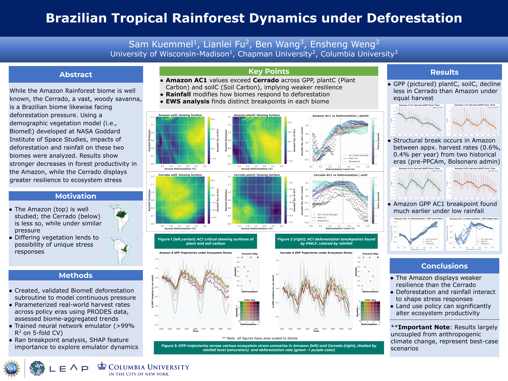
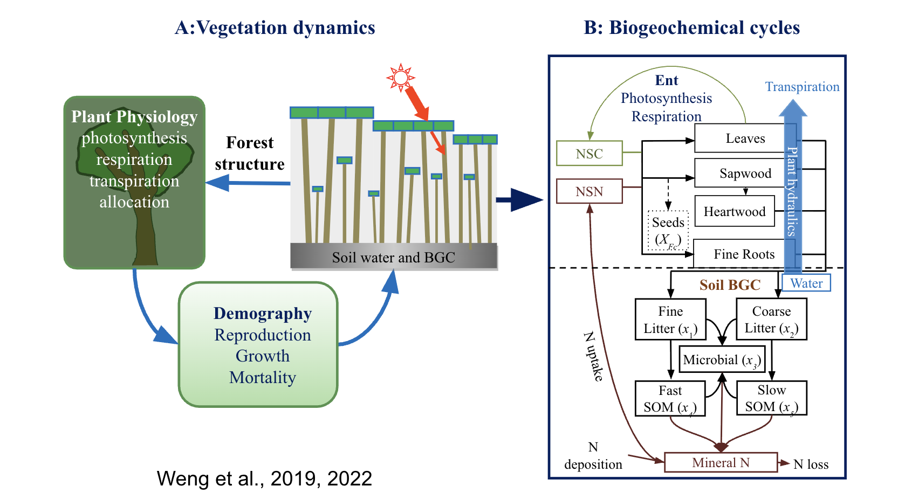
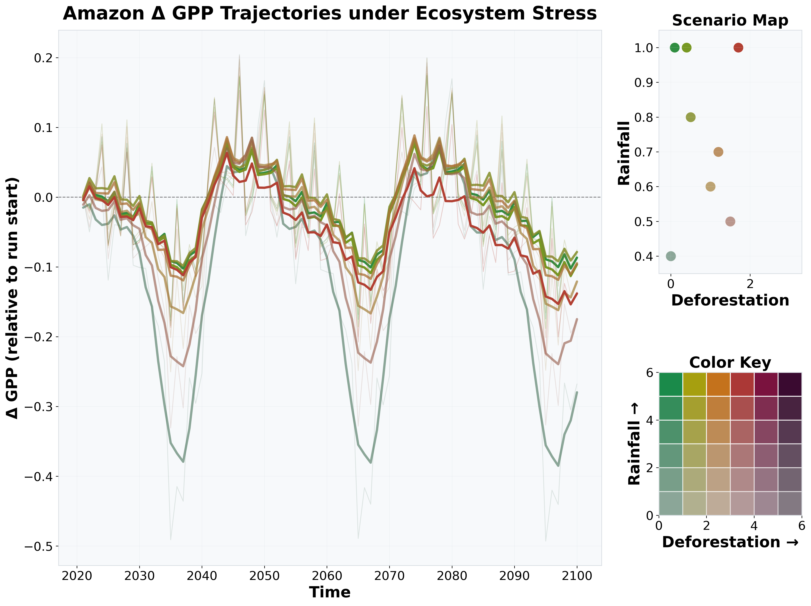
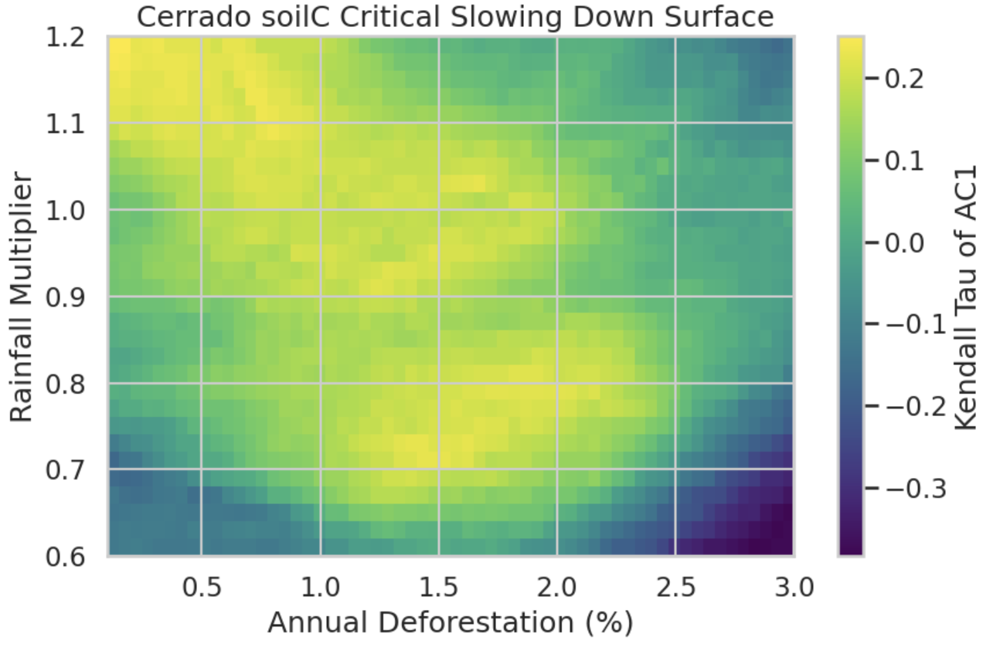
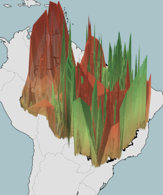
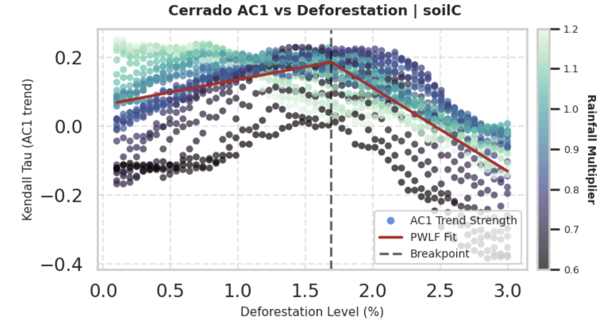
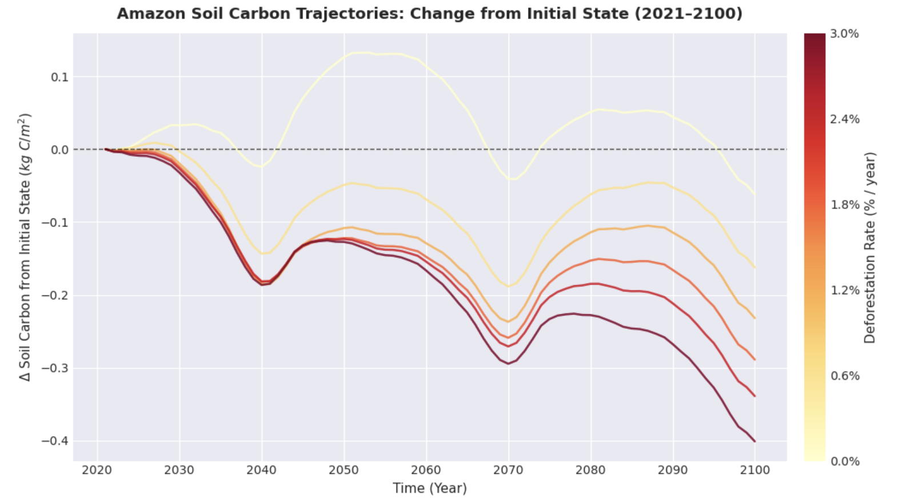
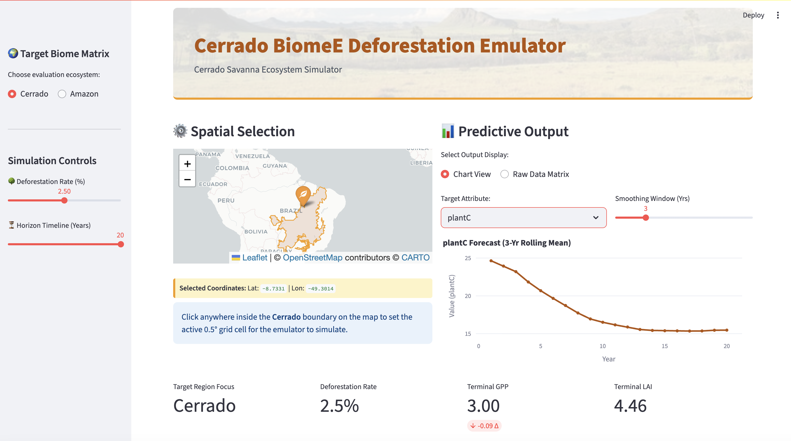

Emulator for Tropical Deforestation in the NASA-GISS BiomeE model
While the Amazon Rainforest biome is well known, the Cerrado, a vast, woody savanna, is a Brazilian biome likewise facing deforestation pressure. Using a demographic vegetation model (i.e., BiomeE) developed at NASA Goddard Institute of Space Studies, impacts of deforestation and rainfall on these two biomes were analyzed.
poster — "Brazilian Tropical Rainforest Dynamics under Deforestation"

The original poster
Columbia University CUPP Symposium; abstract of project also submitted to AGU Fall 26 Meeting
Methods
Created new subroutine, neural network emulator -- a machine learning method -- for analysis
image — subroutine / model schematic

The deforestation subroutine
Harvests fraction of eligible trees in each cohort, returns biomass
image - Comparing various stress scenarios

By-biome comparison
Clipped results to each biome, analyzed scenarios from the BiomeE Model
image — AC1 critical slowing surface

Trained biome-aggregated neural network emulator
Found AC1, a resiliency metric, across thousands of scenarios
image — spatiotemporal GPP changes

Running spatiotemporal emulator over biomes
Using emulator inference loop, calculated and plotted change over time. 15 year gpp change below.
Favorite additional graphs
image — Soil Carbon AC1 trends, Cerrado

image — Amazon soil carbon scenarios

image — Streamlit emulator visualizer

Notes
·aggregated emulator: >99% R² (5-fold CV)
·Amazon AC1 > Cerrado across GPP, plantC, soilC
·rainfall and deforestation interact non-linearly
·Amazon ecosystem variable declines stronger under deforestation